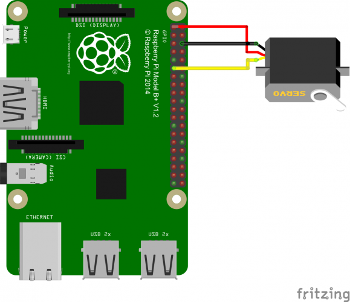

ROS2 notes
ROS2 concepts
ROS2 graph concepts
Names
ROS2 filesystem
Environment variables
Packages
Launch
Robot description
ROS2 standard libraries
ROS Control
MoveIt
RViz
RViz Interface
Using RViz #TODO
RQt (formerly RQt2)
GAZEBO
Install ROS on Raspberry
Prerequisites
ROS installation
Shared network
Raspberry - servo
References
ROS2 notes
»
Install ROS on Raspberry
»
Raspberry - servo
View page source
Raspberry - servo
